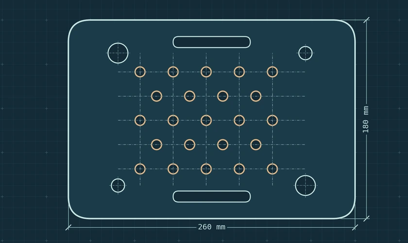
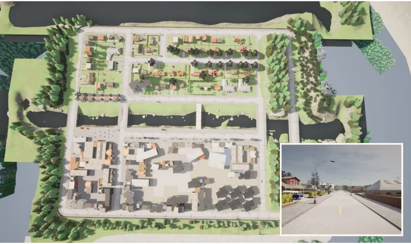
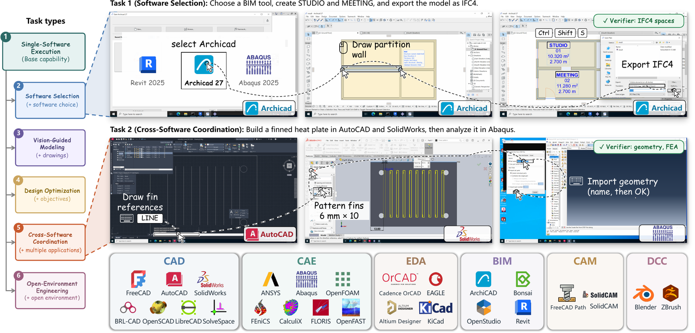
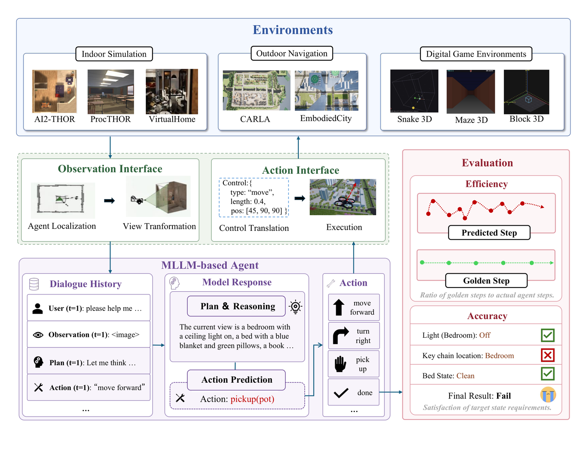
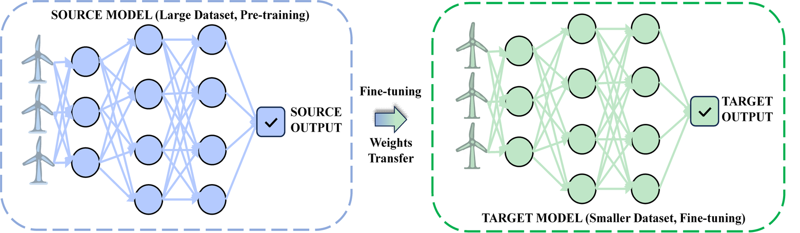
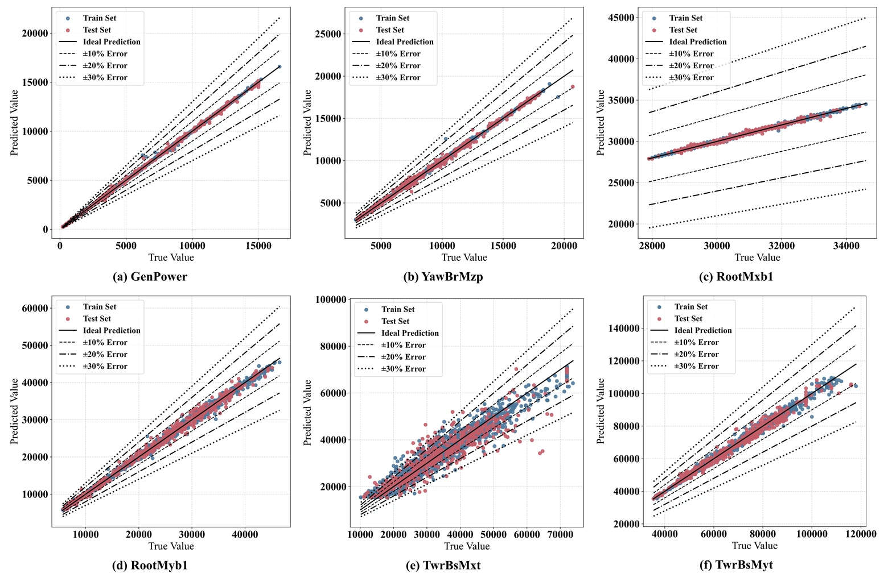
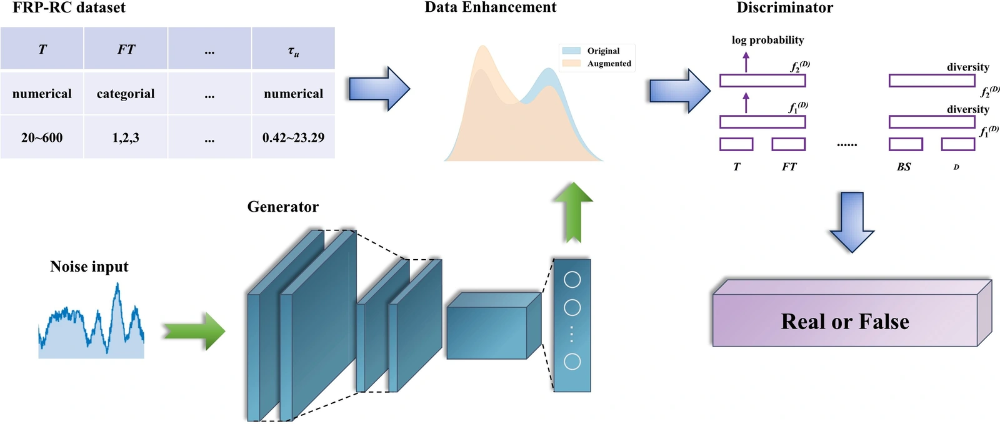
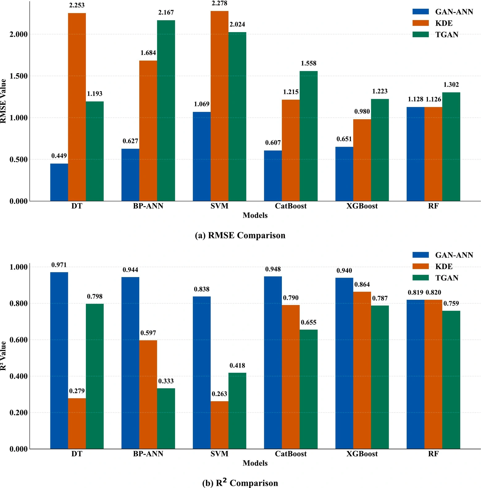
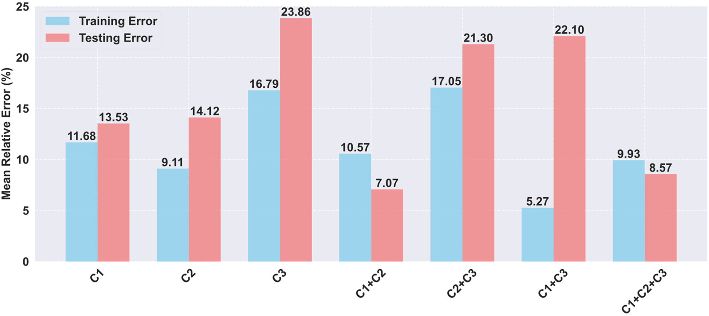

Engineering software
EngiWorld
We built 1,301 tasks across 26 professional applications to test whether agents can produce engineering files that meet the task requirements.
PhD student in Civil Engineering at Chongqing University
AI for ScienceEngineering agentsWind engineering
I study how multimodal agents reason about space and use professional engineering software. My work in AI for Science also uses machine learning to predict offshore wind turbine loads, indoor air quality and the strength of structural materials.

Engineering software
We built 1,301 tasks across 26 professional applications to test whether agents can produce engineering files that meet the task requirements.

I co-designed the benchmark, ran model experiments and evaluated the engineering files produced at each stage.

Figure 1I helped design the benchmark, ran experiments and evaluated how agents navigated and manipulated objects across eight simulated environments.

Figure 1A model pretrained on 5 MW turbine simulations was transferred to 15 MW turbines. With 40% of the target-domain data, it matched an XGBoost baseline trained on 80%.

Figure 2
Figure 8We augmented high-temperature pull-out test data using a GAN, compared six regression models and used SHAP to interpret bond-strength predictions.

Figure 1
Figure 16Geometric, reinforcement and material-strength constraints guide a neural network that predicts the flexural capacity of prestressed ultra-high-performance concrete beams.

Figure 7Engineering AI Research and Development Intern
Co-designed EngiWorld, ran model experiments and evaluated the files agents produced in professional engineering software.
Designed and tested software-development tasks for Micius-Flash, including a CAD hole-pattern plugin and a PySide6 implementation of Blender modeling workflows.
PhD student in Civil Engineering
Master’s in Civil Engineering
Bachelor’s in Civil Engineering